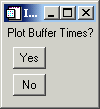
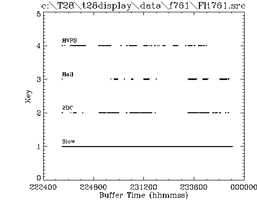
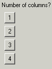
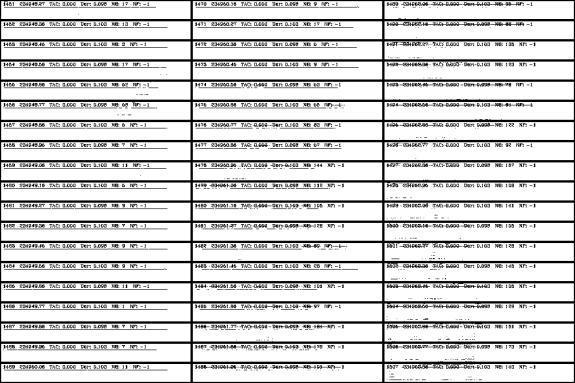

Description For Using T28DISPLAY program – Version 1.0
- The
“Display Hail” option
It is designed to display the hail data for the STEPS 2000 project. After choosing this option the following window will open:

Choose a flight number and a
summary of the SEA records is shown: 
The user is asked if buffer times to be ploted.  If the answer is yes, then this plot is
displayed:

The next window allows the user to
select time/buffer interval to process:

followed by  Choose for example 3 columns and a
display like this will follow:

For each page displayed, the user
has the option to save a *.ps file.